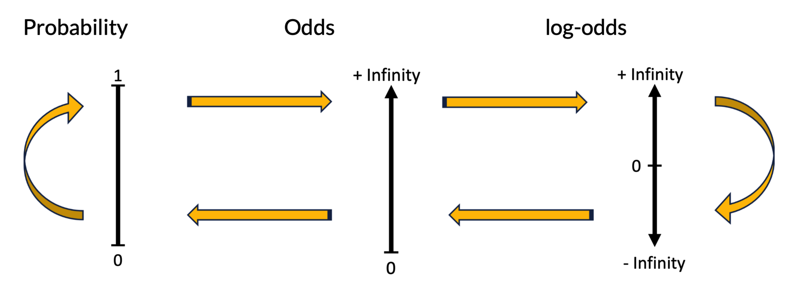

See how log-odds, odds and probability are all simply versions of each other - and fundamental to logistic regression.
Published
June 14, 2024
1 Some Background
Today’s post comes from a talk that some of you may have already heard me give in lab meetings, but I thought it could be helpful to have a ‘print’ copy so I’m going to do that here. The material in the talk was loosely based on the following paper:
I’m going back to basics today. I think too often we use statistical techniques without really understanding what is going on ‘under the hood’. While that is ok to some extent, a better appreciation of what you’re actually doing when you perform a hypothesis test, or run a regression model, lends more robustness to the validity of both your results and your interpretation of them.
So let’s take a more fundamental look at logistic regression - a workhorse statistical model that I’d be willing to bet most of you have run at some point in your research careers. Now, because I consider myself more an applied rather than theoretical biostatistician, I am going to try and get my main points across to you with as little maths as possible, and hopefully not bore you in the process (but this is statistics, so hey…).
What I hope you can gain from reading this is to think about logistic regression in a new and different way - one that completely illuminates the technique for you.
2 The Research Question
The research question in the above paper is asking whether macular hole size at diagnosis is a predictor of surgical repair success. So, in a linear model context, macular hole size is the predictor variable and surgical repair success is the outcome variable, which we consider to be binary in nature - the macular hole is either repaired or it isn’t. For those of you who don’t know what a macular hole is, there is some good information here. Essentially, a small hole develops in the macular - the very center of your retina that you use for detailed vision talks such as driving, reading, etc. The effect is to leave you with a blind spot in your direct line of sight, which is obviously not ideal. When it comes to surgical repair, partial-thickness, smaller holes tend to be associated with a better prognosis, than full-thickness, larger holes.
3 Some Basic Concepts
Before we actually talk about logistic regression, I want to make sure you’re familiar with the three primary effect measures that logistic regression is based on.
Probability - exists in the domain [0, 1].
Odds - exists in the domain [0, \(+\infty\)].
log-odds - exists in the domain [\(-\infty\), \(+\infty\)].

Three Primary Effect Measures in Logistic Regression
It’s important to remember that these are all simple transformations of one another.
3.1 Primary Transformations
If we have the odds of an event, then we can transform that to a probability - or a risk, which is another way to refer to the chance of an outcome - by dividing the odds by the odds plus 1.
If instead we have the probability of an event, we can transform that to the equivalent odds of the event, by dividing the probability by its complement (that is 1 minus the probability).
\[\text{odds} = \frac{\text{p}}{1 - \text{p}}\]
And the log-odds is simply taking the natural logarithm of the odds - there is nothing difficult about that.
\[\text{log-odds} = \text{log(odds)}\]
So these three are what I consider primary transformations and we can cycle between them quite easily with a calculator.
3.2 Secondary Transformations
There are additional transformations that you can make and while these aren’t quite as straightforward, they are even more fundamental to logistic regression, which ultimately uses the log-odds as the scale to estimate its parameters on.
The first is that we can get to a probability directly from the log-odds by taking the exponent of the log-odds divided by the exponent of the log-odds plus one.
And as you can see, that’s really no different to the first equation above because the exponent of the log-odds is simply the odds (the reverse transformation of logging a number is to take the exponent of that logged number). i.e.
\[\text{odds} = e^{\text{log-odds}}\]
Now, the final transformation, and the one that’s most relevant to logistic regression shows the relationship between the log-odds and probability and is known as the logit function (red box) - and we’ll talk more about this in a minute.
3.3 Probability vs Odds (and as applied to the Research Question)
Let’s go back now to our original research question and specifically look at the difference between the probability and odds of an event - I want to solidify this concept in your minds. For most of us probability (or chance) is much more intuitive than the notion of odds. If I think about the likelihood of it being a wet day, I think there’s (for example) an 80% chance of it raining, rather than 4 to 1 odds in favour of it raining. However, if you like to wager on the horses than you may actually be quite comfortable with thinking in terms of odds - as those are the terms bets are placed in.
In the following I’ve simulated some data from the original paper (based on the summary statistics and regression model provided). Obviously macular hole size is a continuous variable, but for the sake of this illustration I am going to dichotomise it at it’s approximate mean value (480 microns). From this we can draw up a 2 x 2 contingency table of the number of successful and failed macular hole repairs as a function of the dichotomised version of macular hole size.
When we talk about probabilities we focus on the proportion of successes out of the total for each row. So, the probability (or risk) of successful repair for those patients with a macular hole size less than 480 microns is therefore 479/487 or about 0.98. That’s in contrast to the probability of successful repair in those patients with a size greater than 480 microns - where the chance of success is 380/503 or 0.76 - so lower as one would expect. You can then take a ratio of those two probabilities or risks to give the classic risk ratio and that equals 1.3 which tells you that the chance of successful repair is 30% greater if you have a smaller macular hole at initial presentation.
Now let’s look at the equivalent odds. When we talk about odds we focus on the ratio of successes to failures and don’t really worry about the totals. So the odds of successful repair for those patients with a smaller initial hole is 479/8 or 60 to 1. The odds of success with a larger hole are a lot more modest - 380/123 or about 3 to 1. We can then calculate the classic odds ratio which works out at about 20, meaning the odds of successful repair is about 20 times greater in those with thinner initial holes.
Note that both of these effect measures are commensurate - they point in exactly the same direction - that you fare better with a smaller hole at diagnosis. They are just different ways of expressing the same thing.
4 Logistic Regression
Ok, let’s actually talk about logistic regression.
Logistic regression is a type of generalised linear model - of which there are many - the poisson, negative binomial, multinomial are just some examples. The important thing is that the standard linear model equation consists of an outcome variable (Y) on the left side and a linear predictor of that outcome (X) on the right. The linear predictor can be composed of one or multiple variables.
\[\text{Y} = \beta_0 \; + \; \beta_1x\] Now, a fundamental assumption of the linear model is that Y is an unbounded and continuous variable and the relationship between X and Y is linear - if you plot X and Y you should get close to a straight line. That also means the ‘effect’ of a one-unit change in X on Y remains constant, over the range of X.
However, a few things change with logistic regression: The first thing is that we’re no longer estimating Y itself but rather the probability that Y = 1 or in other words the probability that the outcome has occurred.
\[\text{p(Y = 1)} = \beta_0 \; + \; \beta_1x\]
But in estimating the probability that Y = 1, the relationship between X and Y is no longer linear and instead takes on a sigmoidal or S shape (I’ll illustrate this shortly). Consequently this means that the ‘effect’ of a one-unit change in X on Y is no longer constant - that link has now broken down.
So what do we do when our outcome violates the above assumptions because it can only take on values between 0 and 1 and the relationship between Y and X is no longer linear?
How do we now ‘link’ X and Y?
4.1 The Logit Link Function (and why log-odds are actually important)
The log-odds or the logit function is pivotal to how logistic regression works. The logit function is a type of link function and there’s really nothing mysterious or difficult about this. A link function is just a function of the mean of Y - in other words a transformation of the mean of Y - and we use this link function as the outcome instead of Y itself.
\[\text{logit(p)} = \text{log}\Bigl(\frac{\text{p}}{1 - \text{p}}\Bigr)\] The logistic model then becomes:
This allows the outcome to become continuous and unbounded and the association between Y and X to become linear, therefore satisfying those fundamental assumptions of the linear model that I mentioned earlier.
Thus, the logit is a type of transformation that links or maps probability values from\((0, 1)\) to real numbers \({\displaystyle (-\infty ,+\infty )}\). Now, on the log-odds/logit scale the effect of a one-unit change in X on Y becomes constant once again.
4.2 WTH? log-odds/odds/probabilities - You’re confusing me - pick one please!!
It’s important to remember that logistic regression is really about probabilities, not odds. Probabilities are more intuitive than odds (unless you like to put a bet on the horses), so why use odds? Well, model results have historically been expressed in terms of odds and odds ratios for mathematical convenience. As it is for the log-odds scale, the ‘effect’ of a one-unit change in X on Y is also constant on the odds scale (but as a ratio of two odds, not as a difference in two log-odds). So an odds ratio describes a constant ‘effect’ of a predictor on the odds of an outcome, irrespective of the value of the predictor. This is not the case on the probability scale, where both differences and ratios vary per unit change depending on the value of the predictor (I will illustrate this later).
The TLDR:
Model is estimated (under the hood) on the log-odds scale to satisfy modelling assumptions.
Model results are displayed on the odds scale (as odds ratios) for their constancy.
Probabilities are calculated post-hoc with not much extra effort.
4.3 Back to the Research Question
Let’s go back to the original research question for the final time and now illustrate these concepts in that context. The regression equation for surgical repair success as a function of macular hole size that was estimated in our paper is shown here.
Basically, the log-odds of successful repair can be predicted by calculating the result of 10.89 minus the product of 0.016 and whatever the macular hole size is in microns.
4.3.1 Simulate Some Data
We can simulate some data from that regression equation - essentially reverse engineering fake data from the estimated best fit equation on the actual data. Why do this? Well, it gives us some sense of what the actual data may have looked like that the researchers collected empirically. We can then do all sorts of cool things like refit a model, generate model predictions, etc. Data simulation is something I am still learning more about but it opens up a world of possibilities in your analytical work.
For this simulation I used a normal distribution with a mean and SD for macular hole size of 486 and 142, respectively (the numbers came from the original research paper). The code to show how to reproduce this in R is included below but you can do something similar in Stata and in most other scriptable statistical software packages.
Code
library(tidyverse)library(kableExtra)library(emmeans)library(gtsummary)library(ggmagnify)library(ggpubr)# Simulationn <-1000# set number of obs to simulateset.seed(1234) # set seed for reproducibilitymac_hole_size <-rnorm(n, 486, 142) # generate macular hole inner opening data with mean 486 and sd = 152logodds_success <-10.89-0.016* mac_hole_size # generate variable that is linear combination of intercept = 10.89 and coefficient for macular hole -0.016 (logit scale)odds_success <-exp(logodds_success) # exponentiate logodds to get oddsprob_success <- odds_success/(1+ odds_success) # generate probabilities from thisy_success <-rbinom(n, 1, prob_success) # generate outcome variable as a function of those probabilitiesdf <-data.frame(cbind(mac_hole_size, # combine into dataframe logodds_success, odds_success, prob_success, y_success))df <- df |>filter(mac_hole_size >100) # only include those with size > 100
Essentially, we generate some random values of macular hole size based on the specified distribution and then plug those values in to the regression equation and calculate the various outcome measures. The resultant data look like (first 20 rows shown):
Let’s pick a couple of data points to examine more closely.
If we look at the first row (blue), the macular hole size is about 315 microns and this translates to a log-odds of successful repair of 5.9 (calculated straight from the regression equation), an odds of successful repair of about 350 to 1 (transformation calculation) and a probability of successful repair of 0.997 (transformation calculation). We can then generate the actual outcome status using that probability as a random variable in a binomial distribution. So in this case a relatively low macular hole size translates to a successful repair, as we might have expected.
Now if we look at the last row of data (yellow), we see something different. Here we have a simulated size of 829 microns and this translates to a log-odds of successful repair of -2.4, an odds of 1 to 10 against and a probability of less than 0.1. Not surprisingly, the outcome status in this case is simulated as a failure.
4.3.2 Plot the Observed Data
What if we now plot the observed data, that is, plot the outcome status as a function of macular hole size?
I’m a big advocate of always plotting your data first - before you calculate any descriptive statistics and certainly before running any statistical tests. In fact I’m not being melodramatic when I say that plotting your data can save you from looking like an analytical fool when you’re potentially ill-founded assumptions aren’t realised in the actual data. A good visualisation can reveal these kinds of problems instantly.
After that big recommendation, we might be left feeling slightly deflated when we see that plotting binary data doesn’t appear that informative - I mean where’s the nice scatter plot and imaginary trend line that we’re used to thinking about?
Well it’s not entirely helpless - we can see that there’s more successes skewed towards smaller macular holes and more failures skewed towards larger macular holes, so that does tell us something useful. But there are better ways to plot binary data and I’ll take you through this shortly.
4.3.3 Fit Linear Model (Naive Approach)
What if we fit a standard regression line to binary data, effectively treating Y as continuous? Well people have done this in the past, and in some parts of the data analysis world, still do. It kind of works, but it’s not the best tool for the job and we can certainly do better. The best fit line is negative suggesting that as macular hole size increases, repair success decreases, so it is in line with what we know to be true. Note that I have rescaled macular hole size so that the resulting coefficient isn’t so small (now 1 ‘unit’ = 100 microns instead of 1 micron).
Code
# Linear modelmod_linear <-lm(y_success ~I(mac_hole_size/100), data = df) mod_linear |>tbl_regression(intercept = T)
Characteristic
Beta
95% CI1
p-value
(Intercept)
1.5
1.4, 1.5
<0.001
I(mac_hole_size/100)
-0.12
-0.14, -0.11
<0.001
1 CI = Confidence Interval
Code
# Plot data with regression lineggplot(df, aes(mac_hole_size, y_success)) +geom_point(size =2, alpha =0.1) +geom_abline(slope =coef(mod_linear)[["I(mac_hole_size/100)"]]/100, intercept =coef(mod_linear)[["(Intercept)"]], color ="cornflowerblue", linewidth =1) +scale_x_continuous(limits =c(0, 1200), breaks =seq(0, 1200, by =100)) +scale_y_continuous(limits =c(0, 1), breaks =seq(0, 1, by =1)) +xlab("Macular hole size") +ylab("Surgical repair success") +theme_bw(base_size =25)
4.3.4 Problem - Predictions are made Outside the Probability Domain
The problem with naively fitting a standard linear model is that because we are know treating Y as unbounded and continuous, the model no longer knows that the outcome has to be constrained between 0 and 1, and predictions can easily fall outside this range. And that’s exactly what we can see here - a macular hole size of 100 microns (blue) predicts outcome success at 1.35 and a size of 1200 microns (yellow) predicts outcome success at -0.02. So fitting a standard linear model to binary data is really not a good approach.
Code
# Create new df to predict on new values of xnew_dat <-data.frame(mac_hole_size =seq(from =0, to =1200, by =50))# Predict new fitted valuespred <-cbind(new_dat, prediction =predict(mod_linear, newdata = new_dat))# Display predictionspred |>kable(align ="c", digits =2) |>kable_styling() |>row_spec(3, bold = T, background ="skyblue1") |>row_spec(25, bold = T, background ="lightgoldenrod1")
mac_hole_size
prediction
0
1.47
50
1.41
100
1.35
150
1.29
200
1.22
250
1.16
300
1.10
350
1.04
400
0.98
450
0.91
500
0.85
550
0.79
600
0.73
650
0.66
700
0.60
750
0.54
800
0.48
850
0.42
900
0.35
950
0.29
1000
0.23
1050
0.17
1100
0.10
1150
0.04
1200
-0.02
4.3.5 Plot the ‘Binned’ Observed Data
So I said above that there was a better way to plot binary data in an effort to make the visualisation more information, and there is. Instead of just plotting the raw data - just the 0‘s and 1’s - you can create ’bins’ of data based on (some fairly arbitrary) thresholds of the predictor you are plotting against and then plot the proportion of successes within each bin. Here I created ‘bins’ of data for each 50\(\mu m\)’s of macular hole size and then calculated the mean success rate (i.e. the proportion of 1’s) within each bin.
Code
# Create bins of data for each 50 microns of macular hole sizedf$bins <-cut(df$mac_hole_size, breaks =seq(0, 1000, by =50))# Calculate means (number of successful repairs divided by total number of repairs) in each bindf <- df |>group_by(bins) |>mutate(mean_y =mean(y_success))# Plot observed (averaged) data ggplot(df, aes(as.numeric(bins)*50-25, mean_y)) +geom_point(size =2) +geom_line(color ="orange", linewidth =1) +scale_x_continuous(limits =c(0, 1200), breaks =seq(0, 1200, by =100)) +scale_y_continuous(limits =c(0, 1), breaks =seq(0, 1, by =0.2)) +xlab("Macular hole size") +ylab("Proportion") +theme_bw(base_size =25)
Now we are starting to see the classic sigmoid shape of the relationship between probability and a continuous predictor.
4.3.6 Fit a Logistic Model to the Simulated Data
Now, let’s finally fit a logistic model to these simulated data.
Code
# Logistic modelmod_logistic <-glm(y_success ~I(mac_hole_size/100), data = df, family ="binomial")mod_logistic |>tbl_regression()
Characteristic
log(OR)1
95% CI1
p-value
I(mac_hole_size/100)
-1.5
-1.8, -1.3
<0.001
1 OR = Odds Ratio, CI = Confidence Interval
On the model estimation log-odds scale, the parameter estimate for the effect of macular hole size is -1.5, meaning for every 100 micron increase in macular hole size, the log-odds of success decreases by 1.5 units. All stats software will also provide you with parameter estimates as odds ratios, because that’s how we’re accustomed to reporting effects. And the equivalent odds ratio in this case is 0.22. In other words, for every 100 micron increase in macular hole size there is about a 78% reduction in the odds of success.
Code
mod_logistic |>tbl_regression(exponentiate = T)
Characteristic
OR1
95% CI1
p-value
I(mac_hole_size/100)
0.22
0.17, 0.28
<0.001
1 OR = Odds Ratio, CI = Confidence Interval
Note that the odds ratio coefficient is a simple transformation of the log-odds coefficient (as we described earlier.) That is:
\[e^{-1.5} = 0.22\]
4.3.7 Plot Predicted log-odds of Surgical Repair Success
Now we can plot the predicted log-odds of surgical repair success. Note that this is a straight line effectively fitted to our binary outcome, and the reason again that we can do this is because the binary outcome has been ‘remapped’ to log-odds and the log-odds exist on an unbounded and continuous scale. So this is a valid plot, unlike that before where we plotted the predictions treating Y as if it were a continuous outcome (I’m not necessarily suggesting this is a useful plot, just that it’s valid).
Code
# Predictions# Emmeans of logodds at 600 and 700 micronsemmeans_df <-data.frame(emmeans(mod_logistic, ~ mac_hole_size, at =list(mac_hole_size =c(600, 700, 800))))# Create df of emmeans and corresponding odds and probs, for plottingemmeans_df <- emmeans_df |>select(mac_hole_size, emmean) |>rename(logodds = emmean) |>mutate(odds =round(exp(logodds), 3),probs =round(plogis(logodds), 2),logodds =round(logodds, 3))# Predictions ----# Create new df to predict on new values of xnew_dat <-data.frame(mac_hole_size =seq(from =0, to =1200, length.out =100))# Predict new fitted values and SE's on logodds scalepred_logodds <-predict(mod_logistic, newdata = new_dat, type ="link", se =TRUE)new_dat <-cbind(new_dat, pred_logodds)# Create new df of predictionspredictions <- new_dat |>rename(pred_logodds_est = fit) |>mutate(pred_logodds_LL = pred_logodds_est - (1.96* se.fit),pred_logodds_UL = pred_logodds_est + (1.96* se.fit)) |>select(-c(se.fit, residual.scale))# Predict new fitted values and SE's on odds scalepredictions <- predictions |>mutate(pred_odds_est =exp(pred_logodds_est),pred_odds_LL =exp(pred_logodds_LL),pred_odds_UL =exp(pred_logodds_UL))# Predict new fitted values and SE's on probability scalepred_probs <-predict(mod_logistic, newdata = new_dat, type ="response", se =TRUE)new_dat <-cbind(new_dat[1], pred_probs)new_dat <- new_dat |>mutate(pred_probs_LL = fit - (1.96* se.fit),pred_probs_UL = fit + (1.96* se.fit))# Add predicted probs and CIs to predictions dfpredictions <-cbind(predictions, pred_probs_est = new_dat$fit, pred_probs_LL = new_dat$pred_probs_LL,pred_probs_UL = new_dat$pred_probs_UL)# Plot predicted log-oddsggplot(predictions, aes(x = mac_hole_size, y = pred_logodds_est)) +geom_ribbon(aes(ymin = pred_logodds_LL, ymax = pred_logodds_UL), alpha =0.2) +geom_line(color ="cornflowerblue", linewidth =1) +geom_point(data = df, aes(x = mac_hole_size, y = y_success), size =2, alpha =0.1) +scale_x_continuous(limits =c(0, 1200), breaks =seq(0, 1200, by =100)) +scale_y_continuous(limits =c(-100, 100), breaks =seq(-100, 100, by =2)) +coord_cartesian(xlim =c(0, 1200), ylim =c(-8, 8)) +xlab("Macular hole size") +ylab("Predicted log-odds") +theme_bw(base_size =25)
4.3.8 Plot Predicted Odds of Surgical Repair Success
We can also plot the predicted odds of surgical repair success. Note that this best-fitting line is not linear, but instead looks like an exponential plot. We established previously that odds exist on a scale from 0 to \(+\infty\) and that’s what we can appeciate here. Remember that this is just another transformation of the log-odds and the same trend is seen - as hole size increases, the odds of success decline.
4.3.9 Plot Predicted Probabilities of Surgical Repair Success
And we can also plot the predicted probabilities of surgical repair success. Again this is just another transformation of the log-odds or the odds. Note the classic sigmoid shape which emulates what we saw earlier when plotting the binned raw data. To my mind this plot is more useful than either plots of predicted log-odds or odds, as it tells us the likely chance of successful repair conditional on the initial macular hole size.
4.3.10 Plot Observed and Predicted Probabilities of Surgical Repair Success
And in fact what you should ideally find if you plot both your observed and predicted probabilities is that they are quite similar, reflecting that the model actually fits the data quite well. Of course, in this case the convergence of observed and predicted probabilities is unsurprising given that we know the data-generating proces - i.e. we fitted a model to data that came from a model. But, in general, this is a good way to assess your model fit.
What I want to try and reinforce in the figure below is how the log-odds, the odds and the probability of the outcome are all transformations of each other.
In logistic regression we are ultimately interested in the probability of the outcome occurring. But we use the log-odds or logit link function to map probabilities onto a linear real-number range. This means that the change in Y for each unit increase in X remains the same and we can see that in the top plot. So the log-odds coefficient that our stats software gives us is constant across all values of macular hole size. This represents the difference in the log-odds of success for each unit change in X.
One unit increase in log-odds:
600 -> 700\(\mu m\) = -0.181 - 1.323 = -1.504
700 -> 800\(\mu m\) = -1.686 - -0.181 = -1.505
The middle plot shows the equivalent odds of success across the same range of macular hole size. Here the difference in Y is no longer constant for each unit increase in X, but the commensurate ratio is constant - and this gives us the odds ratio. This means that the odds ratio is constant across all values of macular hole size.
One unit increase in odds:
600 -> 700\(\mu m\) = 0.834/3.756 = 0.22
700 -> 800\(\mu m\) = 0.185/0.834 = 0.22
Finally the lower plot shows the equivalent probabilities of success and now there is no constancy in either unit differences or ratios. So, if we are interested in expressing our logistic regression model results as differences or ratios of predicted probabilities, we need to make sure that we qualify the macular hole size that a particular predicted probability corresponds to, as this will change across the range of X.
This has been a long post but we are finally at the end. I hope that reading this has demystified what goes on under the hood in logistic regression as it’s really not that difficult once you understand the purpose of the link function.
These are the main summary points:
Logistic regression is a type of generalised linear model that allows the estimation of associations of potential predictors with a binary outcome.
The logit link function transforms the probabilities of a binary outcome variable to a continuous, unbounded scale (log-odds). Standard linear modelling methods can then be applied to estimate the model.
Log-odds, odds and probabilities are all simple transformations of one another.
The model is estimated on the log-odds scale where the association between the predictor and the log-odds of the outcome is linear, and the unit difference is constant.
Results may be reported in terms of odds or probabilities:
On the odds scale the association between the predictor and the odds of the outcome is non-linear, but the unit ratio is constant.
On the probability scale the association between the predictor and the probability of the outcome is non-linear, and the unit difference/ratio is not constant.
This means probability estimates (risk differences of ratios) depend on the value of the predictor and this needs to be specified.
Source Code
---title: "Logistic Regression - Under the Hood"date: 2024-06-14categories: [code, analysis, modelling, visualisation, probability]#image: "R_small.jpeg"description: "See how log-odds, odds and probability are all simply versions of each other - and fundamental to logistic regression."---# Some BackgroundToday's post comes from a talk that some of you may have already heard me give in lab meetings, but I thought it could be helpful to have a 'print' copy so I'm going to do that here. The material in the talk was loosely based on the following paper:[Ophthalmic Statistics Note 11: Logistic Regression](https://bjo.bmj.com/content/100/12/1594)I'm going back to basics today. I think too often we use statistical techniques without really understanding what is going on 'under the hood'. While that is ok to some extent, a better appreciation of what you're actually doing when you perform a hypothesis test, or run a regression model, lends more robustness to the validity of both your results and your interpretation of them.So let's take a more fundamental look at logistic regression - a workhorse statistical model that I'd be willing to bet most of you have run at some point in your research careers. Now, because I consider myself more an applied rather than theoretical biostatistician, I am going to try and get my main points across to you with as little maths as possible, and hopefully not bore you in the process (but this is statistics, so hey...).What I hope you can gain from reading this is to think about logistic regression in a new and different way - one that completely illuminates the technique for you.# The Research QuestionThe research question in the above paper is asking whether macular hole size at diagnosis is a predictor of surgical repair success. So, in a linear model context, macular hole size is the predictor variable and surgical repair success is the outcome variable, which we consider to be binary in nature - the macular hole is either repaired or it isn't. For those of you who don't know what a macular hole is, there is some good information [here](https://www.mdfoundation.com.au/about-macular-disease/other-macular-conditions/macular-hole/). Essentially, a small hole develops in the macular - the very center of your retina that you use for detailed vision talks such as driving, reading, etc. The effect is to leave you with a blind spot in your direct line of sight, which is obviously not ideal. When it comes to surgical repair, partial-thickness, smaller holes tend to be associated with a better prognosis, than full-thickness, larger holes.# Some Basic ConceptsBefore we actually talk about logistic regression, I want to make sure you're familiar with the three primary effect measures that logistic regression is based on.1. Probability - exists in the domain `[`0, 1`]`.2. Odds - exists in the domain `[`0, $+\infty$`]`.3. log-odds - exists in the domain `[`$-\infty$, $+\infty$`]`.{fig-align="center"}It's important to remember that these are all simple transformations of one another.## Primary TransformationsIf we have the odds of an event, then we can transform that to a probability - or a *risk*, which is another way to refer to the chance of an outcome - by dividing the odds by the odds plus 1.$$\text{p} = \frac{\text{odds}}{1 + \text{odds}}$$If instead we have the probability of an event, we can transform that to the equivalent odds of the event, by dividing the probability by its complement (that is 1 minus the probability).$$\text{odds} = \frac{\text{p}}{1 - \text{p}}$$And the log-odds is simply taking the natural logarithm of the odds - there is nothing difficult about that.$$\text{log-odds} = \text{log(odds)}$$So these three are what I consider primary transformations and we can cycle between them quite easily with a calculator.{fig-align="center"}## Secondary TransformationsThere are additional transformations that you can make and while these aren't quite as straightforward, they are even more fundamental to logistic regression, which ultimately uses the log-odds as the scale to estimate its parameters on.The first is that we can get to a probability directly from the log-odds by taking the exponent of the log-odds divided by the exponent of the log-odds plus one.$$\text{p} = \frac{e^{\text{log-odds}}}{1 + e^{\text{log-odds}}}$$And as you can see, that's really no different to the first equation above because the exponent of the log-odds is simply the odds (the reverse transformation of logging a number is to take the exponent of that logged number). i.e.$$\text{odds} = e^{\text{log-odds}}$$Now, the final transformation, and the one that's most relevant to logistic regression shows the relationship between the log-odds and probability and is known as the **logit function** (red box) - and we'll talk more about this in a minute.$$\text{log-odds} = \text{log}\Bigl(\frac{\text{p}}{1 - \text{p}}\Bigr)$$## Probability vs Odds (and as applied to the Research Question)Let's go back now to our original research question and specifically look at the difference between the probability and odds of an event - I want to solidify this concept in your minds. For most of us probability (or *chance*) is much more intuitive than the notion of odds. If I think about the likelihood of it being a wet day, I think there's (for example) an 80% chance of it raining, rather than 4 to 1 odds in favour of it raining. However, if you like to wager on the horses than you may actually be quite comfortable with thinking in terms of odds - as those are the terms bets are placed in.In the following I've simulated some data from the original paper (based on the summary statistics and regression model provided). Obviously macular hole size is a continuous variable, but for the sake of this illustration I am going to dichotomise it at it's approximate mean value (`480` microns). From this we can draw up a 2 x 2 contingency table of the number of successful and failed macular hole repairs as a function of the dichotomised version of macular hole size.When we talk about probabilities we focus on the proportion of **successes** out of the **total** for each row. So, the probability (or risk) of successful repair for those patients with a macular hole size less than `480` microns is therefore `479/487` or about `0.98`. That's in contrast to the probability of successful repair in those patients with a size greater than `480` microns - where the chance of success is `380/503` or `0.76` - so lower as one would expect. You can then take a ratio of those two probabilities or risks to give the classic risk ratio and that equals `1.3` which tells you that the chance of successful repair is `30%` greater if you have a smaller macular hole at initial presentation.Now let's look at the equivalent odds. When we talk about odds we focus on the ratio of **successes** to **failures** and don't really worry about the totals. So the odds of successful repair for those patients with a smaller initial hole is `479/8` or `60` to `1`. The odds of success with a larger hole are a lot more modest - `380/123` or about `3` to `1`. We can then calculate the classic odds ratio which works out at about `20`, meaning the odds of successful repair is about `20` times greater in those with thinner initial holes.Note that both of these effect measures are commensurate - they point in exactly the same direction - that you fare better with a smaller hole at diagnosis. They are just different ways of expressing the same thing.{fig-align="center"}# Logistic RegressionOk, let's actually talk about logistic regression.Logistic regression is a type of *generalised linear model* - of which there are many - the poisson, negative binomial, multinomial are just some examples. The important thing is that the standard linear model equation consists of an outcome variable (`Y`) on the left side and a linear predictor of that outcome (`X`) on the right. The linear predictor can be composed of one or multiple variables.$$\text{Y} = \beta_0 \; + \; \beta_1x$$ Now, a fundamental assumption of the linear model is that `Y` is an unbounded and continuous variable and the relationship between `X` and `Y` is linear - if you plot `X` and `Y` you should get close to a straight line. That also means **the 'effect' of a one-unit change in `X` on `Y` remains constant, over the range of `X`**.However, a few things change with logistic regression: The first thing is that we're no longer estimating `Y` itself but rather the probability that `Y = 1` or in other words the probability that the outcome has occurred.$$\text{p(Y = 1)} = \beta_0 \; + \; \beta_1x$$But in estimating the probability that `Y = 1`, the relationship between `X` and `Y` is no longer linear and instead takes on a sigmoidal or S shape (I'll illustrate this shortly). Consequently this means that **the 'effect' of a one-unit change in `X` on `Y` is no longer constant** - that link has now broken down.So what do we do when our outcome violates the above assumptions because it can only take on values between `0` and `1` and the relationship between `Y` and `X` is no longer linear?**How do we now 'link' `X` and `Y`?**## The Logit Link Function (and why log-odds are actually important)The log-odds or the logit function is pivotal to how logistic regression works. The logit function is a type of **link** function and there's really nothing mysterious or difficult about this. A link function is just a **function of the mean of Y** - in other words a **transformation of the mean of Y** - and we use this link function as the outcome instead of Y itself.$$\text{logit(p)} = \text{log}\Bigl(\frac{\text{p}}{1 - \text{p}}\Bigr)$$ The logistic model then becomes:$$\text{Y} = \text{logit(p)} = \beta_0 \; + \; \beta_1x$$This allows the outcome to become continuous and unbounded and the association between `Y` and `X` to become linear, therefore satisfying those fundamental assumptions of the linear model that I mentioned earlier.Thus, the logit is a type of transformation that **links or maps probability values from** $(0, 1)$ to real numbers ${\displaystyle (-\infty ,+\infty )}$. Now, on the log-odds/logit scale **the effect of a one-unit change in `X` on `Y` becomes constant once again**.## WTH? log-odds/odds/probabilities - You're confusing me - pick one please!!It's important to remember that logistic regression is really about probabilities, not odds. Probabilities are more intuitive than odds (unless you like to put a bet on the horses), so why use odds? Well, model results have historically been expressed in terms of odds and odds ratios for mathematical convenience. As it is for the log-odds scale, the 'effect' of a one-unit change in `X` on `Y` is also constant on the odds scale (but as a *ratio* of two odds, not as a *difference* in two log-odds). So an odds ratio describes a constant 'effect' of a predictor on the odds of an outcome, irrespective of the value of the predictor. This is not the case on the probability scale, where both differences and ratios vary per unit change depending on the value of the predictor (I will illustrate this later).The TLDR:- Model is estimated (under the hood) on the **log-odds** scale to satisfy modelling assumptions.- Model results are displayed on the **odds** scale (as odds ratios) for their constancy.- **Probabilities** are calculated post-hoc with not much extra effort.## Back to the Research QuestionLet's go back to the original research question for the final time and now illustrate these concepts in that context. The regression equation for surgical repair success as a function of macular hole size that was estimated in our paper is shown here.$$\text{logit(p)} = 10.89 - 0.016 \; \text{x} \;\text{macular hole size}\;(\mu m)$$Basically, the log-odds of successful repair can be predicted by calculating the result of 10.89 minus the product of 0.016 and whatever the macular hole size is in microns.### Simulate Some DataWe can simulate some data from that regression equation - essentially reverse engineering fake data from the estimated best fit equation on the actual data. Why do this? Well, it gives us some sense of what the actual data may have looked like that the researchers collected empirically. We can then do all sorts of cool things like refit a model, generate model predictions, etc. Data simulation is something I am still learning more about but it opens up a world of possibilities in your analytical work.For this simulation I used a normal distribution with a mean and SD for macular hole size of `486` and `142`, respectively (the numbers came from the original research paper). The code to show how to reproduce this in `R` is included below but you can do something similar in `Stata` and in most other scriptable statistical software packages.```{r}#| message: falselibrary(tidyverse)library(kableExtra)library(emmeans)library(gtsummary)library(ggmagnify)library(ggpubr)# Simulationn <-1000# set number of obs to simulateset.seed(1234) # set seed for reproducibilitymac_hole_size <-rnorm(n, 486, 142) # generate macular hole inner opening data with mean 486 and sd = 152logodds_success <-10.89-0.016* mac_hole_size # generate variable that is linear combination of intercept = 10.89 and coefficient for macular hole -0.016 (logit scale)odds_success <-exp(logodds_success) # exponentiate logodds to get oddsprob_success <- odds_success/(1+ odds_success) # generate probabilities from thisy_success <-rbinom(n, 1, prob_success) # generate outcome variable as a function of those probabilitiesdf <-data.frame(cbind(mac_hole_size, # combine into dataframe logodds_success, odds_success, prob_success, y_success))df <- df |>filter(mac_hole_size >100) # only include those with size > 100```Essentially, we generate some random values of macular hole size based on the specified distribution and then plug those values in to the regression equation and calculate the various outcome measures. The resultant data look like (first 20 rows shown):```{r}head(df, 20) |>kable(align ="c", digits =2) |>kable_styling() |>row_spec(1, bold = T, background ="skyblue1") |>row_spec(20, bold = T, background ="lightgoldenrod1")```<br>Let's pick a couple of data points to examine more closely.If we look at the first row (blue), the macular hole size is about `315` microns and this translates to a log-odds of successful repair of `5.9` (calculated straight from the regression equation), an odds of successful repair of about `350` to `1` (transformation calculation) and a probability of successful repair of `0.997` (transformation calculation). We can then generate the actual outcome status using that probability as a random variable in a binomial distribution. So in this case a relatively low macular hole size translates to a successful repair, as we might have expected.Now if we look at the last row of data (yellow), we see something different. Here we have a simulated size of `829` microns and this translates to a log-odds of successful repair of `-2.4`, an odds of `1` to `10` against and a probability of less than `0.1.` Not surprisingly, the outcome status in this case is simulated as a failure.### Plot the Observed DataWhat if we now plot the observed data, that is, plot the outcome status as a function of macular hole size?I'm a big advocate of always plotting your data first - before you calculate any descriptive statistics and certainly before running any statistical tests. In fact I'm not being melodramatic when I say that plotting your data can save you from looking like an analytical fool when you're potentially ill-founded assumptions aren't realised in the actual data. A good visualisation can reveal these kinds of problems instantly.After that big recommendation, we might be left feeling slightly deflated when we see that plotting binary data doesn't appear that informative - I mean where's the nice scatter plot and imaginary trend line that we're used to thinking about?```{r}# Plot observed dataggplot(df, aes(mac_hole_size, y_success)) +geom_point(size =4, alpha =0.1) +scale_x_continuous(limits =c(0, 1200), breaks =seq(0, 1200, by =100)) +scale_y_continuous(limits =c(0, 1), breaks =seq(0, 1, by =1)) +xlab("Macular hole size") +ylab("Surgical repair success") +theme_bw(base_size =25)```Well it's not entirely helpless - we can see that there's more successes skewed towards smaller macular holes and more failures skewed towards larger macular holes, so that does tell us something useful. But there are better ways to plot binary data and I'll take you through this shortly.### Fit Linear Model (Naive Approach)What if we fit a standard regression line to binary data, effectively treating `Y` as continuous? Well people have done this in the past, and in some parts of the data analysis world, still do. It kind of works, but it's not the best tool for the job and we can certainly do better. The best fit line is negative suggesting that as macular hole size increases, repair success decreases, so it is in line with what we know to be true. Note that I have rescaled macular hole size so that the resulting coefficient isn't so small (now 1 'unit' = 100 microns instead of 1 micron).```{r}# Linear modelmod_linear <-lm(y_success ~I(mac_hole_size/100), data = df) mod_linear |>tbl_regression(intercept = T)# Plot data with regression lineggplot(df, aes(mac_hole_size, y_success)) +geom_point(size =2, alpha =0.1) +geom_abline(slope =coef(mod_linear)[["I(mac_hole_size/100)"]]/100, intercept =coef(mod_linear)[["(Intercept)"]], color ="cornflowerblue", linewidth =1) +scale_x_continuous(limits =c(0, 1200), breaks =seq(0, 1200, by =100)) +scale_y_continuous(limits =c(0, 1), breaks =seq(0, 1, by =1)) +xlab("Macular hole size") +ylab("Surgical repair success") +theme_bw(base_size =25)```### Problem - Predictions are made Outside the Probability DomainThe problem with naively fitting a standard linear model is that because we are know treating `Y` as unbounded and continuous, the model no longer knows that the outcome has to be constrained between 0 and 1, and predictions can easily fall outside this range. And that's exactly what we can see here - a macular hole size of `100` microns (blue) predicts outcome success at `1.35` and a size of `1200` microns (yellow) predicts outcome success at `-0.02`. So fitting a standard linear model to binary data is really not a good approach.```{r}# Create new df to predict on new values of xnew_dat <-data.frame(mac_hole_size =seq(from =0, to =1200, by =50))# Predict new fitted valuespred <-cbind(new_dat, prediction =predict(mod_linear, newdata = new_dat))# Display predictionspred |>kable(align ="c", digits =2) |>kable_styling() |>row_spec(3, bold = T, background ="skyblue1") |>row_spec(25, bold = T, background ="lightgoldenrod1")```### Plot the 'Binned' Observed DataSo I said above that there was a better way to plot binary data in an effort to make the visualisation more information, and there is. Instead of just plotting the raw data - just the `0`'s and `1`'s - you can create 'bins' of data based on (some fairly arbitrary) thresholds of the predictor you are plotting against and then plot the proportion of successes within each bin. Here I created 'bins' of data for each `50` $\mu m$'s of macular hole size and then calculated the mean success rate (i.e. the proportion of 1's) within each bin.```{r}# Create bins of data for each 50 microns of macular hole sizedf$bins <-cut(df$mac_hole_size, breaks =seq(0, 1000, by =50))# Calculate means (number of successful repairs divided by total number of repairs) in each bindf <- df |>group_by(bins) |>mutate(mean_y =mean(y_success))# Plot observed (averaged) data ggplot(df, aes(as.numeric(bins)*50-25, mean_y)) +geom_point(size =2) +geom_line(color ="orange", linewidth =1) +scale_x_continuous(limits =c(0, 1200), breaks =seq(0, 1200, by =100)) +scale_y_continuous(limits =c(0, 1), breaks =seq(0, 1, by =0.2)) +xlab("Macular hole size") +ylab("Proportion") +theme_bw(base_size =25)```Now we are starting to see the classic sigmoid shape of the relationship between probability and a continuous predictor.### Fit a Logistic Model to the Simulated DataNow, let's finally fit a logistic model to these simulated data.```{r}# Logistic modelmod_logistic <-glm(y_success ~I(mac_hole_size/100), data = df, family ="binomial")mod_logistic |>tbl_regression()```On the model estimation log-odds scale, the parameter estimate for the effect of macular hole size is `-1.5`, meaning for every `100` micron increase in macular hole size, the log-odds of success decreases by `1.5` units. All stats software will also provide you with parameter estimates as odds ratios, because that's how we're accustomed to reporting effects. And the equivalent odds ratio in this case is `0.22`. In other words, for every `100` micron increase in macular hole size there is about a `78`% reduction in the odds of success.```{r}mod_logistic |>tbl_regression(exponentiate = T)```Note that the odds ratio coefficient is a simple transformation of the log-odds coefficient (as we described earlier.) That is:$$e^{-1.5} = 0.22$$### Plot Predicted log-odds of Surgical Repair SuccessNow we can plot the predicted log-odds of surgical repair success. Note that this is a straight line effectively fitted to our binary outcome, and the reason again that we can do this is because the binary outcome has been 'remapped' to log-odds and the log-odds exist on an unbounded and continuous scale. So this **is** a valid plot, unlike that before where we plotted the predictions treating `Y` as if it were a continuous outcome (I'm not necessarily suggesting this is a *useful* plot, just that it's valid).```{r}# Predictions# Emmeans of logodds at 600 and 700 micronsemmeans_df <-data.frame(emmeans(mod_logistic, ~ mac_hole_size, at =list(mac_hole_size =c(600, 700, 800))))# Create df of emmeans and corresponding odds and probs, for plottingemmeans_df <- emmeans_df |>select(mac_hole_size, emmean) |>rename(logodds = emmean) |>mutate(odds =round(exp(logodds), 3),probs =round(plogis(logodds), 2),logodds =round(logodds, 3))# Predictions ----# Create new df to predict on new values of xnew_dat <-data.frame(mac_hole_size =seq(from =0, to =1200, length.out =100))# Predict new fitted values and SE's on logodds scalepred_logodds <-predict(mod_logistic, newdata = new_dat, type ="link", se =TRUE)new_dat <-cbind(new_dat, pred_logodds)# Create new df of predictionspredictions <- new_dat |>rename(pred_logodds_est = fit) |>mutate(pred_logodds_LL = pred_logodds_est - (1.96* se.fit),pred_logodds_UL = pred_logodds_est + (1.96* se.fit)) |>select(-c(se.fit, residual.scale))# Predict new fitted values and SE's on odds scalepredictions <- predictions |>mutate(pred_odds_est =exp(pred_logodds_est),pred_odds_LL =exp(pred_logodds_LL),pred_odds_UL =exp(pred_logodds_UL))# Predict new fitted values and SE's on probability scalepred_probs <-predict(mod_logistic, newdata = new_dat, type ="response", se =TRUE)new_dat <-cbind(new_dat[1], pred_probs)new_dat <- new_dat |>mutate(pred_probs_LL = fit - (1.96* se.fit),pred_probs_UL = fit + (1.96* se.fit))# Add predicted probs and CIs to predictions dfpredictions <-cbind(predictions, pred_probs_est = new_dat$fit, pred_probs_LL = new_dat$pred_probs_LL,pred_probs_UL = new_dat$pred_probs_UL)# Plot predicted log-oddsggplot(predictions, aes(x = mac_hole_size, y = pred_logodds_est)) +geom_ribbon(aes(ymin = pred_logodds_LL, ymax = pred_logodds_UL), alpha =0.2) +geom_line(color ="cornflowerblue", linewidth =1) +geom_point(data = df, aes(x = mac_hole_size, y = y_success), size =2, alpha =0.1) +scale_x_continuous(limits =c(0, 1200), breaks =seq(0, 1200, by =100)) +scale_y_continuous(limits =c(-100, 100), breaks =seq(-100, 100, by =2)) +coord_cartesian(xlim =c(0, 1200), ylim =c(-8, 8)) +xlab("Macular hole size") +ylab("Predicted log-odds") +theme_bw(base_size =25)```### Plot Predicted Odds of Surgical Repair SuccessWe can also plot the predicted odds of surgical repair success. Note that this best-fitting line is not linear, but instead looks like an exponential plot. We established previously that odds exist on a scale from `0` to $+\infty$ and that's what we can appeciate here. Remember that this is just another transformation of the log-odds and the same trend is seen - as hole size increases, the odds of success decline.```{r}# Plot predicted oddsggplot(predictions, aes(x = mac_hole_size, y = pred_odds_est)) +geom_ribbon(aes(ymin = pred_odds_LL, ymax = pred_odds_UL), alpha =0.2) +geom_line(color ="cornflowerblue", linewidth =1) +geom_point(data = df, aes(x = mac_hole_size, y = y_success), size =2, alpha =0.1) +scale_x_continuous(limits =c(0, 1200), breaks =seq(0, 1200, by =100)) +scale_y_continuous(limits =c(0, 1000000), breaks =seq(0, 1000000, by =1000)) +coord_cartesian(xlim =c(0, 1200), ylim =c(0, 7000)) +xlab("Macular hole size") +ylab("Predicted odds") +theme_bw(base_size =25)```### Plot Predicted Probabilities of Surgical Repair SuccessAnd we can also plot the predicted probabilities of surgical repair success. Again this is just another transformation of the log-odds or the odds. Note the classic sigmoid shape which emulates what we saw earlier when plotting the binned raw data. To my mind this plot is more useful than either plots of predicted log-odds or odds, as it tells us the likely chance of successful repair conditional on the initial macular hole size.```{r}# Plot predicted probabilitiesggplot(predictions, aes(x = mac_hole_size, y = pred_probs_est)) +geom_ribbon(aes(ymin = pred_probs_LL, ymax = pred_probs_UL), alpha =0.2) +geom_line(color ="cornflowerblue", linewidth =1) +geom_point(data = df, aes(x = mac_hole_size, y = y_success), size =2, alpha =0.1) +scale_x_continuous(limits =c(0, 1200), breaks =seq(0, 1200, by =100)) +scale_y_continuous(limits =c(0, 1), breaks =seq(0, 1, by =0.2)) +xlab("Macular hole size") +ylab("Predicted probability") +theme_bw(base_size =25)```### Plot Observed and Predicted Probabilities of Surgical Repair SuccessAnd in fact what you should ideally find if you plot both your observed and predicted probabilities is that they are quite similar, reflecting that the model actually fits the data quite well. Of course, in this case the convergence of observed and predicted probabilities is unsurprising given that we know the data-generating proces - i.e. we fitted a model to data that came from a model. But, in general, this is a good way to assess your model fit.```{r}# Plot observed and predicted dataggplot(df, aes(as.numeric(bins)*50-25, mean_y)) +geom_point(size =2) +geom_line(aes(color ="observed"), linewidth =1) +geom_line(data = predictions, aes(x = mac_hole_size, y = pred_probs_est, color ="predicted"), linewidth =1) +scale_color_manual(name ="", values =c("predicted"="cornflowerblue", "observed"="orange")) +scale_x_continuous(limits =c(0, 1200), breaks =seq(0, 1200, by =100)) +scale_y_continuous(limits =c(0, 1), breaks =seq(0, 1, by =0.2)) +xlab("Macular hole size") +ylab("Probability") +theme_bw(base_size =25) +theme(legend.position ="bottom")```### Putting It All TogetherWhat I want to try and reinforce in the figure below is how the log-odds, the odds and the probability of the outcome are all transformations of each other.In logistic regression we are ultimately interested in the probability of the outcome occurring. But we use the log-odds or logit link function to map probabilities onto a linear real-number range. This means that the change in `Y` for each unit increase in `X` remains the same and we can see that in the top plot. So the log-odds coefficient that our stats software gives us is constant across all values of macular hole size. This represents the **difference** in the log-odds of success for each unit change in `X`.One unit increase in log-odds:- `600 -> 700` $\mu m$\`= -0.181 - 1.323 = -1.504`\- `700 -> 800` $\mu m$\`= -1.686 - -0.181 = -1.505`\The middle plot shows the equivalent odds of success across the same range of macular hole size. Here the difference in `Y` is no longer constant for each unit increase in `X`, but the commensurate **ratio** is constant - and this gives us the odds ratio. This means that the odds ratio is constant across all values of macular hole size.One unit increase in odds:- `600 -> 700` $\mu m$\`= 0.834/3.756 = 0.22`\- `700 -> 800` $\mu m$\`= 0.185/0.834 = 0.22`\Finally the lower plot shows the equivalent probabilities of success and now there is no constancy in either unit differences or ratios. So, if we are interested in expressing our logistic regression model results as differences or ratios of predicted probabilities, we need to make sure that we qualify the macular hole size that a particular predicted probability corresponds to, as this will change across the range of `X`.One unit increase in probability:- `600 -> 700` $\mu m$\`= 0.45 - 0.79 = -0.34`\`= 0.45/0.79 = 0.57`\- `700 -> 800` $\mu m$\`= 0.16 - 0.45 = -0.29`\`= 0.16/0.45 = 0.36`\```{r}#| message: false#| warning: false#| fig-width: 16#| fig-height: 10# Reformat plots slightly for ggarrange ----p1 <-ggplot(predictions, aes(x = mac_hole_size, y = pred_logodds_est)) +geom_ribbon(aes(ymin = pred_logodds_LL, ymax = pred_logodds_UL), alpha =0.2) +geom_line(color ="cornflowerblue", linewidth =1) +geom_point(data = df, aes(x = mac_hole_size, y = y_success), size =2, alpha =0.1) +annotate("text", x =1150, y =6, label ="log-odds", size =10) +scale_x_continuous(limits =c(0, 1200), breaks =seq(0, 1200, by =100)) +annotate("text", x =1110, y =3.5, label ="unit differences = constant", size =5) +scale_y_continuous(limits =c(-100, 100), breaks =seq(-100, 100, by =2)) +coord_cartesian(xlim =c(0, 1200), ylim =c(-8, 8)) +geom_vline(xintercept =600, color ="red", linetype ="dotted", linewidth =0.6) +geom_vline(xintercept =700, color ="red", linetype ="dotted", linewidth =0.6) +geom_vline(xintercept =800, color ="red", linetype ="dotted", linewidth =0.6) + ggrepel::geom_label_repel(data = emmeans_df, aes(mac_hole_size, logodds),label = emmeans_df$logodds, nudge_x =c(50, 50, 50), nudge_y =c(4, 4, 4),color ="red", segment.size =0.2, size =5) +theme_bw(base_size =20) +ylab("") +theme(axis.title.x =element_blank(), axis.text.x =element_blank())p2 <-ggplot(predictions, aes(x = mac_hole_size, y = pred_odds_est)) +geom_ribbon(aes(ymin = pred_odds_LL, ymax = pred_odds_UL), alpha =0.2) +geom_line(color ="cornflowerblue", linewidth =1) +geom_point(data = df, aes(x = mac_hole_size, y = y_success), size =2, alpha =0.1) +annotate("text", x =1180, y =6000, label ="odds", size =10) +annotate("text", x =1136, y =5000, label ="unit ratios = constant", size =5) +scale_x_continuous(limits =c(0, 1200), breaks =seq(0, 1200, by =100)) +scale_y_continuous(limits =c(-20, 1000000), breaks =c(seq(0, 1000000, by =1000))) +coord_cartesian(xlim =c(0, 1200), ylim =c(0, 7000)) +geom_vline(xintercept =600, color ="red", linetype ="dotted", linewidth =0.6) +geom_vline(xintercept =700, color ="red", linetype ="dotted", linewidth =0.6) +geom_vline(xintercept =800, color ="red", linetype ="dotted", linewidth =0.6) +ylab("") +theme_bw(base_size =20) +theme(axis.title.x =element_blank(), axis.text.x =element_blank())p2_inset <- p2 +scale_y_continuous(limits =c(-20, 1000000), breaks =c(1,2,3,4,5, seq(0, 1000000, by =1000))) +geom_vline(xintercept =600, color ="red", linetype ="dotted", linewidth =0.6) +geom_vline(xintercept =700, color ="red", linetype ="dotted", linewidth =0.6) + ggrepel::geom_label_repel(data = emmeans_df, aes(mac_hole_size, odds),label = emmeans_df$odds, nudge_x =c(50, 50, 50), nudge_y =c(0.5, 1, 1),color ="red", segment.size =0.2, size =5)p2 <- p2 +geom_magnify(from =c(xmin =500, xmax =1000, ymin =0, ymax =5), to =c(xmin =470, xmax =1010, ymin =1000, ymax =5000), shadow = T, axes ="y", plot = p2_inset)p3 <-ggplot(predictions, aes(x = mac_hole_size, y = pred_probs_est)) +geom_ribbon(aes(ymin = pred_probs_LL, ymax = pred_probs_UL), alpha =0.2) +geom_line(color ="cornflowerblue", linewidth =1) +geom_point(data = df, aes(x = mac_hole_size, y = y_success), size =2, alpha =0.1) +annotate("text", x =1140, y =0.8, label ="probability", size =10) +annotate("text", x =1075, y =0.65, label ="unit differences/ratios = not constant", size =5) +scale_x_continuous(limits =c(0, 1200), breaks =seq(0, 1200, by =100)) +scale_y_continuous(limits =c(0, 1), breaks =seq(0, 1, by =0.2)) +geom_vline(xintercept =600, color ="red", linetype ="dotted", linewidth =0.6) +geom_vline(xintercept =700, color ="red", linetype ="dotted", linewidth =0.6) +geom_vline(xintercept =800, color ="red", linetype ="dotted", linewidth =0.6) + ggrepel::geom_label_repel(data = emmeans_df, aes(mac_hole_size, probs),label = emmeans_df$probs, nudge_x =c(50, 50, 50), nudge_y =c(0.1, 0.1, 0.1),color ="red", segment.size =0.2, size =5) +ylab("") +xlab("Macular hole size") +theme_bw(base_size =20)ggarrange(p1, p2, p3, align ="v", ncol =1, heights =c(1,1,1.2))```### Key pointsThis has been a long post but we are finally at the end. I hope that reading this has demystified what goes on under the hood in logistic regression as it's really not that difficult once you understand the purpose of the link function.These are the main summary points:- Logistic regression is a type of *generalised linear model* that allows the estimation of associations of potential predictors with a binary outcome.- The *logit link* function transforms the probabilities of a binary outcome variable to a continuous, unbounded scale (log-odds). **Standard linear modelling methods can then be applied to estimate the model**.- Log-odds, odds and probabilities are all simple transformations of one another.- The model is estimated on the log-odds scale where the association between the predictor and the log-odds of the outcome is linear, and the unit difference is constant.- Results may be reported in terms of odds or probabilities: - On the odds scale the association between the predictor and the odds of the outcome is non-linear, but the unit ratio is constant. - On the probability scale the association between the predictor and the probability of the outcome is non-linear, and the unit difference/ratio is not constant. - This means probability estimates (risk differences of ratios) depend on the value of the predictor and this needs to be specified.